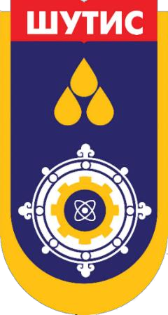
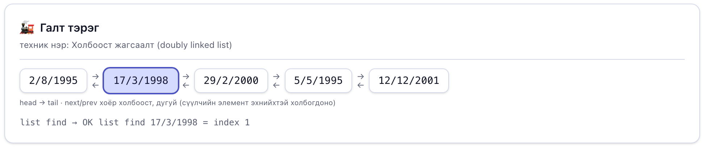
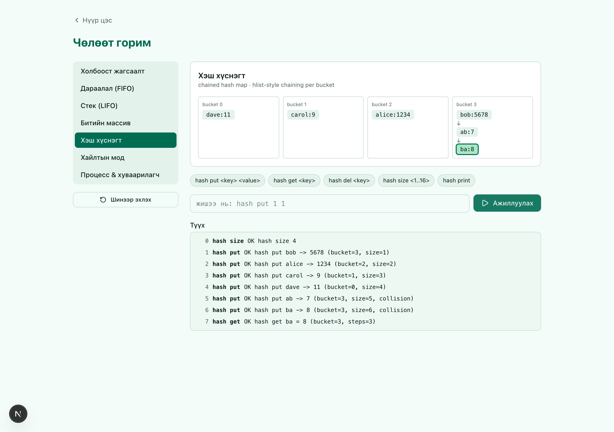
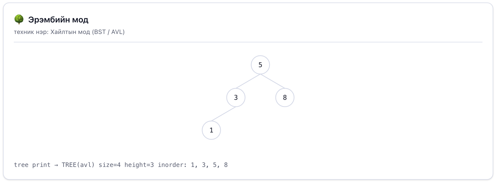
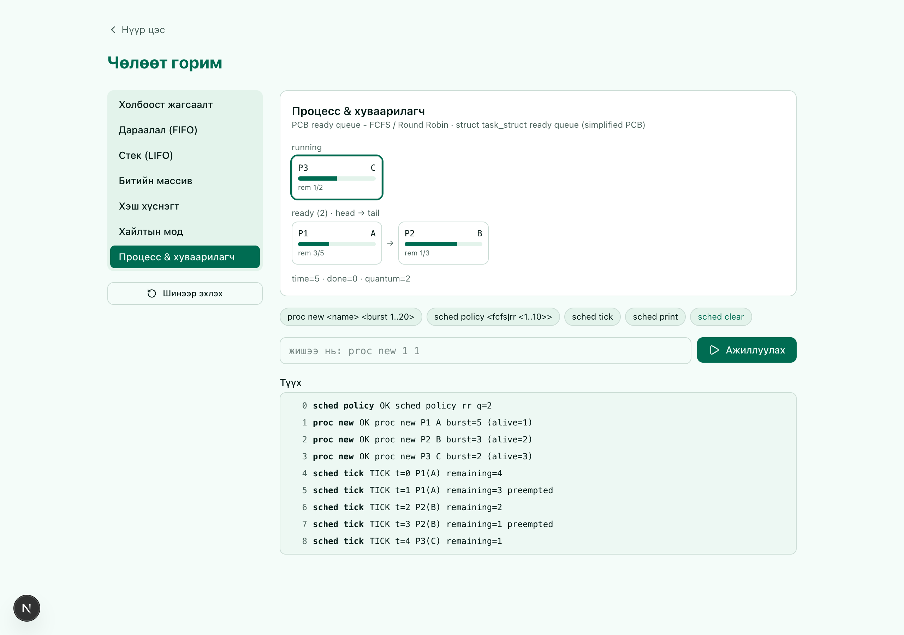

Мэдээлэл, Холбооны
Технологийн Сургууль
"Kernel Data Structures": Кернелийн Өгөгдлийн Бүтцийн Загварчлал
Оюутан: B222270805 Н.Ням-Од, B241940001 А.Гэрэл, B242270088 А.Номин, B241910001 Э.Мягмаршагай, B241910020 О.Хүслэн, B160910830 Ч.Түмэншагай
Удирдагч багш: Г.Ганбат (F.CS10)
ХУРААНГҮЙ
Linux kernel нь процесс, нөөц, файлуудаа холбоост жагсаалт, дараалал, стек, bitmap, хэш хүснэгт, мод зэрэг өгөгдлийн бүтцээр удирддаг. Эдгээрт элемент нэмэх, устгах, хайх үед бүтэц хэрхэн өөрчлөгддөгийг нүдээр харуулах нь энэ төслийн зорилго юм.
Бид kernel-ийн list_head семантикийг C-ээр дахин бичиж, есөн бүтэц бүхий kds командын интерпретатор бүтээв. Вэб апп (Next.js) нь kds --json горимын гаралтыг шууд зурдаг тул бүх логик ганцхан C дотор байна. Kernel module нь color жагсаалт ба start параметртэй Collatz дарааллыг kernel дотор үүсгэж, устгана.
Жишээ скрипт, stress, 40 000 санамсаргүй команд, AVL/red-black/heap инвариантын тестүүд бүгд давсан (нийт 98 PASS). Хэрэглэгч өөрийн огноо, тоо, түлхүүр, процессоо оруулж турших боломжтой.
Төслийн танилцуулга
- Сурах бичиг: Operating System Concepts, Chapter 1 §1.9 Kernel Data Structures (p. 36) ба Chapter 3 Programming Project «Kernel Data Structures».
- Kernel-ийн list_head, bitmap, hash хүснэгт, мод зэрэг бүтцийг хэрэглэгчийн орчинд загварчилж, үйлдэл бүрийн дараах төлөвийг графаар харуулна.
- CLI ба вэб хоёулаа нэг C программаас гаралтай тул дэлгэц дээрх зураг бодит тооцооноос зөрөхгүй.
- «Хичээл» горимд Багш алхам бүрд монгол дуугаар тайлбарлаж, хэрэглэгч нэг командыг нэг удаа ажиллуулж дэвшинэ.
- Буруу оролт бүр (огноо, индекс, түлхүүр, процесс) тодорхой ERR мессеж өгч, програм цааш үргэлжилнэ.
- Есөн бүтэц: холбоост жагсаалт, queue, stack, bitmap, hash, BST/AVL, red-black, min-heap, PCB/scheduler (FCFS/RR).
- Chapter 3-ийн Part I/II kernel module нь бодит Linux кернел дээр insmod/rmmod-оор баталгаажсан.
- Script, stress, fuzz, AVL/red-black/heap тестүүд GitHub Actions дээр Ubuntu + macOS бүрд автоматаар давтагдана.
ВЭБ ДЭЛГЭЦNext.js • React
граф, дуут тайлбар
СЕРВЕР/api/run
Node.js
C ЦӨМkds --json
9 бүтцийн логик
ТӨЛӨВJSON state
шууд зурагдана
Төслийн хүрээнд гүйцэтгэсэн ажлууд
1. C цөм (src/user/kds.c)
- Жагсаалт, queue, stack, bitmap, hash map, BST/AVL, red-black, min-heap, PCB/scheduler — есөн бүтэц.
- Hash-д hlist chaining, ачаалал 0.75-аас хэтрэхэд bucket автомат ×2; overflow/underflow, хязгаарын шалгалт.
2. Вэб апп (web/, Next.js)
- Чөлөөт горим: бүтэц сонгож команд ажиллуулна, граф шууд зурагдана; түүх, буцаах, reset.
- Хичээл: 7 шат, монгол дуут тайлбар, шат бүрд ойлголт шалгах асуулт.
3. Kernel module (src/kernel/)
- Part I: color жагсаалт; Part II: Collatz start параметртэй (1..1 000 000).
- birthday, kfifo, bitmap, Linux-ийн hashtable/rbtree толгой файл, /proc/kds интерфэйс.
4. Тест ба CI
- 8 скрипт + stress + fuzz + AVL/rb/heap шалгалт: нийт 98 PASS, FAIL 0.
- GitHub Actions: Ubuntu + macOS дээр build/тест, автоматаар release.
5. Баримт бичиг
- Report, Manual (LaTeX ба HTML эх), demo бичлэг, хөндлөнгийн шүүмж, постер.
Төслийн үр дүн
make check: 98 PASS (9 скрипт/stress + 9 текст==json + 8 fuzz + 32 AVL + 40 rb/heap). 40 000 санамсаргүй командад текст ба --json мессеж мөр мөрөөрөө ижил. AVL-ийн өндөр ≤ 1.44·log2(n+2), red-black-ийн өнгө/black-height, heap-ийн эс хазайх чанар бүх гүйлтэд хүчинтэй. Kernel module-ийн баталгаажсан хувилбар Ubuntu 24.04 (kernel 6.11.0-17) дээр insmod/rmmod-оор туршигдсан. Вэб аппын хуудсууд console алдаагүй, гаралт нь CLI-тай ижил.

Холбоост жагсаалт: 5 огноо, find-ийн тодотгол

Hash: ab/ba/bob нэг bucket-д (collision)

AVL мод: эргүүлэлтийн дараах тэнцвэр

Round Robin: running, ready queue, progress
Дүгнэлт
- Удирдамжийн 1.9-д заасан бүх үндсэн бүтэц болон Chapter 3-ийн Part I/II kernel module даалгавар хоёулаа хэрэгжиж, тестээр нотлогдсон.
- Нэмэлтээр red-black мод, min-heap-ийг хэрэгжүүлж, AVL-тэй өндөр/эргүүлэлтээр харьцуулсан.
- Вэб нь логикийг давтдаггүй, зөвхөн C-ийн JSON төлөвийг зурдаг тул «зураг бодит ажиллагаанаас зөрөх» асуудал угаасаа байхгүй.
- Цаашдын ажил: rb/heap-ийг вэб дэлгэцэнд нэмэх, kernel module-ийн шинэчлэгдсэн хэсгийг бодит Linux дээр insmod-оор баталгаажуулах.